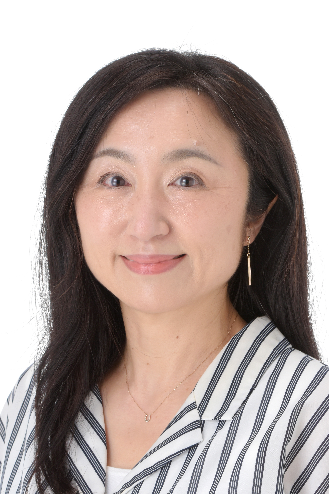

小島美寿穂
ナレーター／俳優（テアトルアカデミー所属）
Voice Samples
名乗り
カフェ（語り・ナチュラル）
アーティスト紹介（クール・トーン低め）
AI（誠実・ストレート）
VPドキュメント（温かみ・語り）
Profile & Performance
【出演歴】
-
■ ナレーション
・BS12「パン日和」#10（2025年11月11日オンエア）
[YouTube]
-
■ 舞台・演劇
・モザイクシェイクスピア「この世界全てが一つの舞台」（2026年6月 / 演出: 大河内直子）
[詳細]
・劇団Focus × テアトルアカデミー「未来は僕らの手の中」（2025年秋 / 演出: 菅野臣太朗）
[詳細]
・劇団Focus × テアトルアカデミー「君が咲く頃」（2025年春 / 演出: 菅野臣太朗）
[詳細]
【経歴・主な実績】
-
・よこざわけい子声優ナレータースクール ナレーターコース修了（2006年）
卒業公演「神々のトロイア」女神レートー役（内幸町ホール）/ ゆーりんプロ研究生
- ・サイエンススタジオ・マリー「キュリー夫人の理科教室」MC（2008年 / 科学技術館）
- ・セガ ドリームキャスト 警告メッセージナレーション（1998年）
-
・第38回全国高等学校演劇大会 優秀賞（1992年 / 前橋女子高等学校『MORAL』経済学役）
[記録]
- 特技・強み：多言語学習（英語・仏語等）、Webデザイン・制作、小学校読み聞かせボランティア、歌唱
- 保有資格：保育士、学芸員（埼玉おもちゃ美術館）、FP2級、カラーコーディネーター2級
- 趣味：観劇、講談
- SNS：
Contact
お仕事のご依頼・お問い合わせは、下記窓口までご連絡お願いいたします。
株式会社テアトルアカデミー 声優サポートチーム
E-mail: plusvoice@theatre.co.jp
メールでお問い合わせする